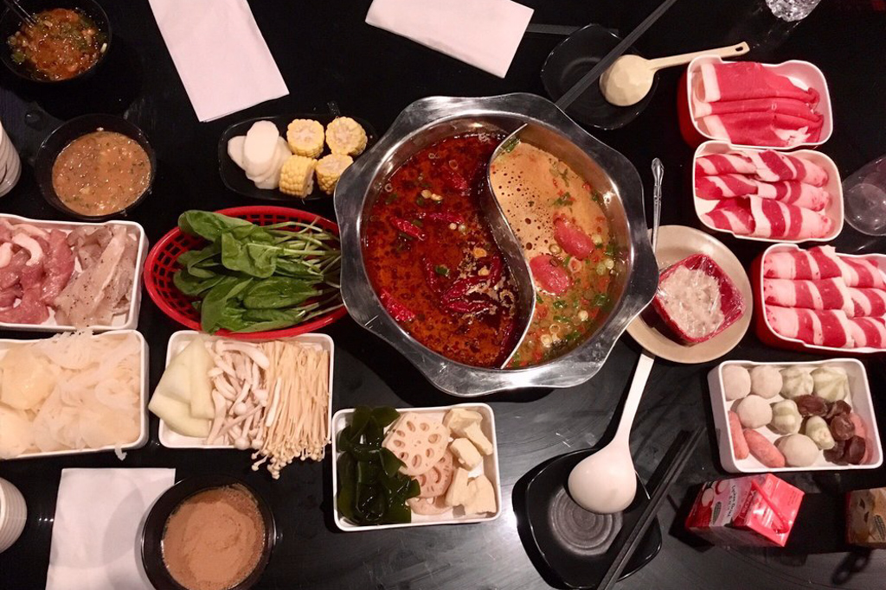
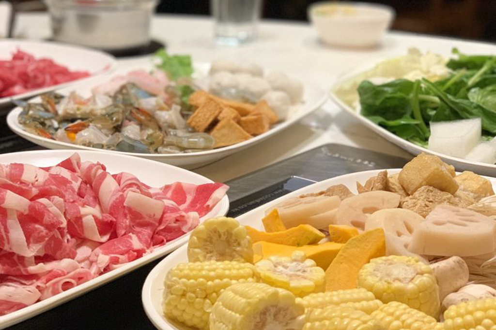
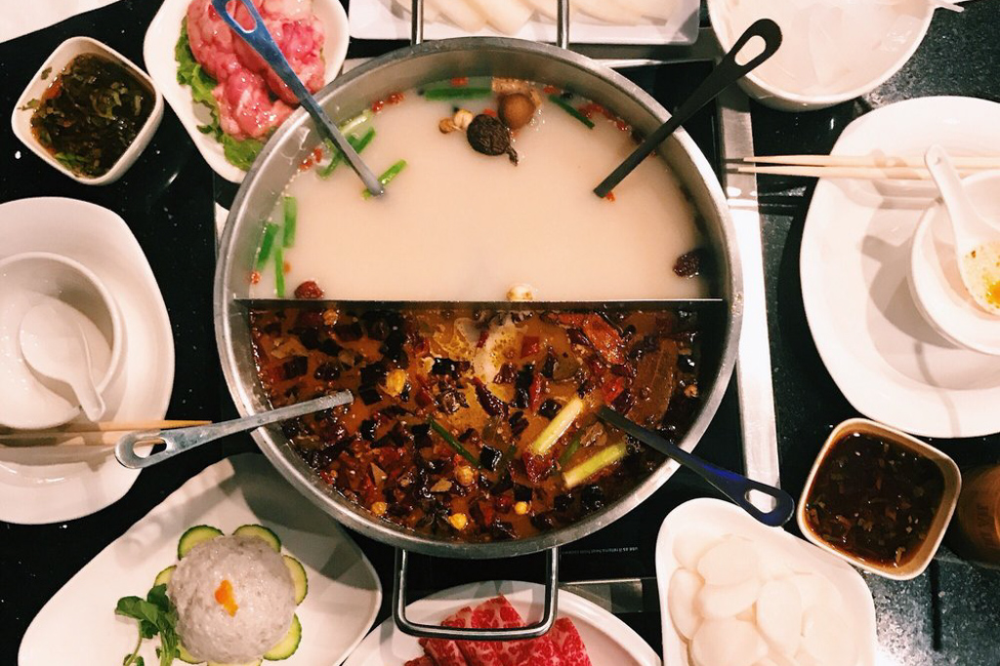
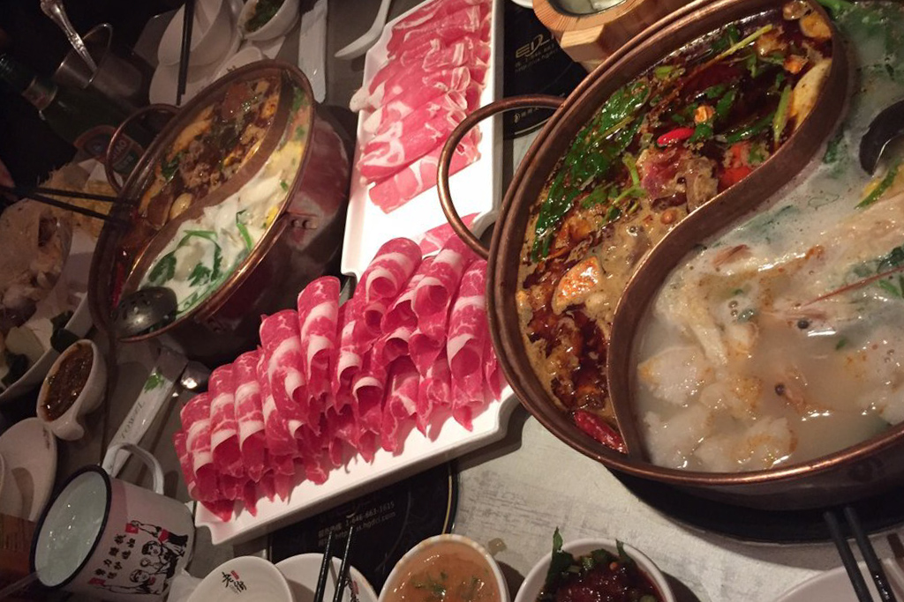
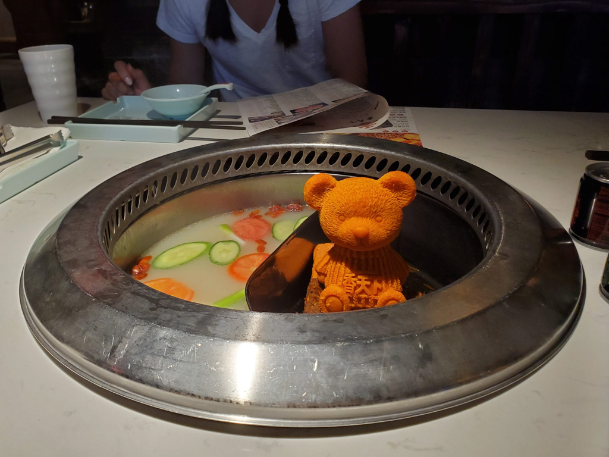

Best Hotpot Spots/DIY Hotpot
Jan 17 - Written by Bonnie and Emily
There is nothing we love more on a cold breezy winter day than this--hotpot. Hotpot is an integral part of our hibernation lifestyle in the cold winter days and the one thing that satisfies our cravings and keeps us toasty warm is hotpot!
Being hotpot fanatics, we made it our mission to find some of the yummiest hotpots that are out in New York and now, we thought we’d share our list of all our favorite hotpot spots so that you can go grab some now too while the winter weather is perfect for some toasty soup! Of course since the winter weather naturally expands our appetites, we’ve also included a variety of restaurant types from a la carte to all you can eat!
99 Favor Taste - 285 Grand St, New York, NY

To start off our hotpot list, I had to choose one of our more frequented hotpot places in Manhattan, 99 Flavor Taste! 99 Flavor Taste has a few spots open around the city near Chinatown, Flushing, Brooklyn, and also Astor Place (they have since closed down due to COVID). But, being close to the NYU campus and also Broadway, the 99 Flavor Taste on Astor Place was always popping with college students looking to grab a feast for a reasonable price of 30$. Their menu is pretty extensive with a variety of seafood, meats, and vegetables to go with your soup, which you can also select up to two per pot. Their restaurants are also very spacious and are one of the least difficult hotpot spots to grab a table real quick with your friends one night. Most of all, the highlight of 99 Flavor Taste is their birthday special! Not only does the birthday girl or boy get treated to a free all you can eat hotpot meal but your friends can also request for the infamous dancing birthday monkey, who comes out to sing the birthday song for the table. Being one of the more convenient spots with a great menu and atmosphere this was a hotpot restaurant that we loved going to.
Houyi Hotpot - 92 Hester St New York, NY
Another hotpot place that we enjoy going to is Houyi Hotpot, another all you can eat spot! Houyi also has two locations, one on 2nd ave near Astor Place, and also one in Chinatown. Houyi is definitely another place that we like to hit up since its another spot that is very close to our university’s campus. Although their menu and soup bases are not as vast as 99 Flavor Taste, there is something else that entices a lot of people to Houyi Hotpot--their unlimited free drinks! Not only do they have a variety of drinks that are free for the taking from their fridge, they also have a separate fridge just for Yakult, for any of our Yakult fans out there (Bonnie loves Yakult). On top of their drinks, they also have an unlimited supply of ice cream flavors for anyone with a sweet tooth thats gotta cool down with some ice cream after all that warm soup and food!
Hometown Hotpot - 194 Grand St New York
Hometown Hotpot is again another all you can eat hotpot spot thats located in Chinatown. Their restaurant is decorated cozily with a lot of room for large groups of friends. Most of all, their sauce bar is just amazingly filled with any possible condiments and toppings you can think of--sauce is that secret ingredient that makes hotpot, well, hotpot! Their menu is also quite vast and, we consider one of the most authentic with a long list of some of the most beloved vegetables and toppings that you would typically find in a Chinese hotpot spot! On top of that, their soup bases are just the right amount of flavoring to bring flavor to all the food that you pick off their menu. Hometown is definitely a nice restaurant to take friends not only for food but also for their great ambience.
Little Sheep Mongolian Hotpot - 105 Bowery New York, NY
Ah we’ve now reached the part of our hotpot list that is no longer all you can eat, but fear not the spots that we’ve recommended are flexible for any budget and definitely have a worthy menu to compete. Little Sheep Mongolian Hotpot also has two locations in the city, one in Chinatown and one in Flushing. Although their menu may be a la carte, we both agree that the meat, soup, and vegetables that are served are a worthwhile high quality that leaves us wanting more. Although their menu is not as expansive as a lot of the all you can eat spots that we’ve named above, the freshness and quality of the items that are on the menu make up for it. Not to mention if you enjoy spicy foods, that their spicy soup base is authentic and most certainly quite hot. As a quick tip, occasionally in the summer Little Sheep Mongolian offers discount deals that you can catch if you’re like us and crave hotpot in any type of weather!
The few restaurants that we’ve listed so far have been spots that you can easily find in Manhattan that we frequent often for its convenience and also their large all you can eat menu! But of course, our hotpot journey took us much farther than just Manhattan. Here are a few other spots that we love and would definitely say is worth the venture outside of the city!
Lao Jie Hotpot - 811 53rd St Brooklyn, NY
Lao Jie Hotpot, is definitely our number one, top rated, all you can eat hotpot spot of our entire hotpot search. Although this spot is located a little farther deep in Brooklyn, the trip is very well worth the time and effort. As Manhattan dwellers, we have definitely ventured to Lao Jie Hotpot many times to satisfy our hotpot cravings. We have yet to find another all you can eat hotpot place in the city that has as large and authentic of a menu for, one of the cheapest prices we’ve found, of $23! Their soup bases are authentic and delicious with a wide variety of fan favorites, one of our favorites are their tomato and hot & spicy soup bases! They also have a delicious grill and skewers menu that is just as yummy as their hotpot menu. Most of all, we also love the friendly customer service from the staff and a delicious complimentary dessert they serve to wrap up a perfect winter meal.
Xiang Hotpot - 136-20 Roosevelt Ave Ste 2M Flushing
Xiang Hotpot is one of the hotpot restaurants that is located in the hub of delicious asian food in New York--Flushing! Although there are many hotpot options in Flushing, this was actually a spot we had stumbled upon. Originally in search of a popular milk tea hotpot soup base that was shown on the Internet, we decided to venture to Flushing to try their milk tea hotpot. But when we had arrived we found out that their milk tea hotpot menu had just ended a week before! Since we had already made our way to Xiang Hotpot, we decided to take a chance on it and stay for some traditional hotpot but with a twist! Since we love the spicy numb soup base that comes in most hotpot restaurants, we found out that they actually had the option to serve the mala soup in teddy bear form! It was adorable and as a forewarning, definitely an extremely spicy level soup. Since Xiang Hotpot was a very traditional Sichuan hotpot restaurant, its sauce was a traditional and simple sesame oil base used to balance the spicy numbness that would come from the soup. All in all, Xiang Hotpot is an authentic and delicious Sichuan hotpot restaurant especially if you enjoy spicy foods!